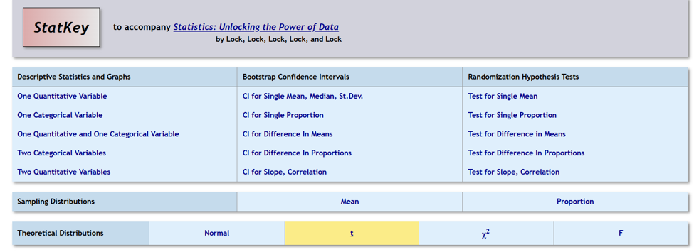
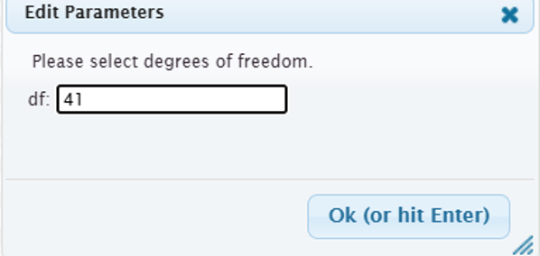
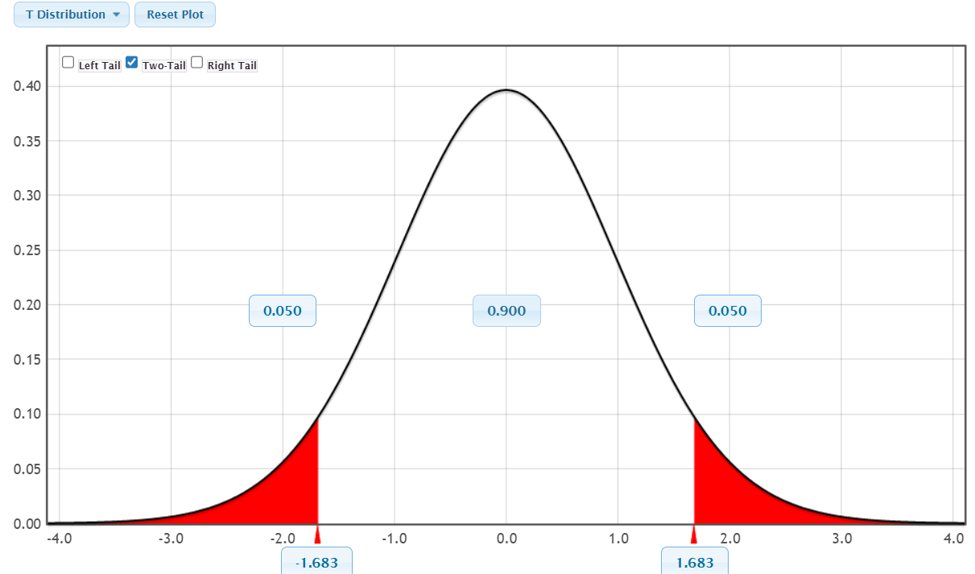
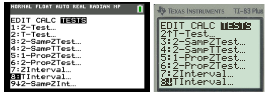
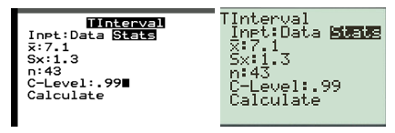
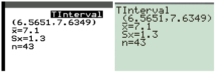
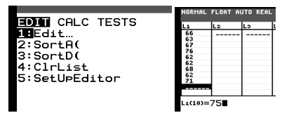
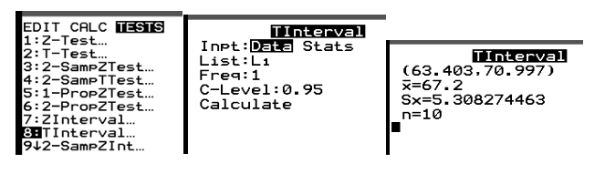
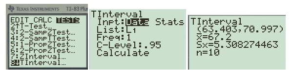

Objectives
At the end of this section you will be able to:
-
Identify the point estimate \(\bar{x}\text{.}\)
-
Determine the t-distribution value.
-
Construct and interpret confidence intervals for the mean.
t for the t-distribution.

OK. This will give you the appropriate curve based on the sample size.

Two Tail and enter 0.90 in the middle portion of the curve. The cut scores will be along the bottom of the curve. The t*=1.683. Notice that there are two values, one positive and one negative since it is symmetric about the mean 0.

STAT button and use the arrow twice to the right until it highlights [TESTS] across the top. Scroll down to option 8: T-interval then press [ENTER].



STAT button and under the EDIT menu select option 1:Edit then press [ENTER] and then input the ten values using [ENTER] after each.

STAT button and use the arrow twice to the right until it highlights [TESTS] across the top. Scroll down to option 8: T-interval then press [ENTER]. Use the arrow if needed to highlight Data and then press [ENTER] to select it. The data was entered into List 1 and the Frequency is 1, the confidence level is .95, scroll to Calculate and hit [ENTER].


Upload the data file and select each variable to find the summary statistics to complete the table below. Click on Change Column to change variable names.
| 78 | 82 | 74 | 88 | 80 |
| 76 | 84 | 79 | 81 | 77 |
| 83 | 75 |